<style>
    /* 基础样式：沉浸式阅读体验 */
    body { 
        font-family: -apple-system, BlinkMacSystemFont, "Segoe UI", Roboto, "Helvetica Neue", Arial, sans-serif; 
        line-height: 1.8; 
        color: #2c3e50;
        max-width: 800px; 
        margin: 0 auto; 
        padding: 40px 20px; 
        background-color: #fff;
    }

    /* 章节单元 */
    .chapter-unit { margin-bottom: 80px; }

    /* 标题体系 */
    h1 { 
        font-size: 2.8em; 
        color: #1a5276; 
        border-bottom: 4px solid #3498db; 
        padding-bottom: 20px; 
        margin-top: 0; 
        letter-spacing: -1px;
    }
    .subtitle {
        font-size: 1.5em;
        color: #7f8c8d;
        margin-top: -15px;
        margin-bottom: 40px;
        font-weight: 300;
    }
    h2 { 
        font-size: 1.8em; 
        color: #e67e22; 
        margin-top: 50px; 
        border-left: 5px solid #e67e22;
        padding-left: 15px;
    }
    h3 { 
        font-size: 1.4em; 
        color: #2980b9; 
        margin-top: 35px; 
        font-weight: 600;
    }
    h4 {
        font-size: 1.1em;
        color: #16a085;
        text-transform: uppercase;
        letter-spacing: 1px;
        margin-top: 25px;
    }
    
    /* 正文 */
    p { margin-bottom: 1.5em; text-align: justify; font-size: 1.05em; }

    /* 特殊区域 */
    .sidebar { 
        background: #f4f6f7; 
        padding: 25px; 
        border-radius: 6px; 
        margin: 30px 0; 
        border: 1px solid #d5dbdb;
    }
    .sidebar-title {
        font-weight: bold;
        color: #c0392b;
        font-size: 1.1em;
        margin-bottom: 15px;
        display: block;
    }

    .learning-goals {
        background: #eafaf1;
        border-left: 5px solid #2ecc71;
        padding: 20px;
        margin: 30px 0;
    }

    .concept-check {
        background: #fff8e1;
        padding: 20px;
        border: 1px dashed #f1c40f;
        margin: 25px 0;
        border-radius: 8px;
        position: relative;
    }
    .concept-check::before {
        content: "Concept Check";
        position: absolute;
        top: -12px;
        left: 20px;
        background: #f1c40f;
        color: #fff;
        padding: 2px 10px;
        font-size: 0.8em;
        border-radius: 4px;
        font-weight: bold;
    }

    .exercises { 
        background: #fffcf0; 
        padding: 30px; 
        margin: 50px 0; 
        border-top: 2px solid #f0e6d2; 
    }
    
    /* 图片占位符 */
    .image-placeholder { 
        background: #ecf0f1; 
        border: 2px dashed #bdc3c7; 
        display: flex; 
        align-items: center; 
        justify-content: center;
        margin: 35px auto 10px auto; 
        color: #7f8c8d; 
        font-family: monospace; 
        font-size: 0.9em;
        position: relative;
    }
    .image-placeholder::after {
        content: attr(data-label);
        position: absolute;
        bottom: 5px;
        right: 10px;
        font-size: 0.8em;
        background: rgba(255,255,255,0.8);
        padding: 2px 5px;
        border-radius: 3px;
    }
    
    .caption { 
        font-size: 0.9em; 
        color: #555; 
        text-align: center; 
        margin-bottom: 40px; 
        font-style: italic;
        padding: 0 40px;
    }
    .caption strong { color: #e74c3c; font-style: normal; }

    /* 列表 */
    ul, ol { padding-left: 20px; margin-bottom: 1.5em; }
    li { margin-bottom: 0.8em; }

    /* 科学记数法修正 */
    sup { font-size: 0.7em; vertical-align: super; }
</style>

<article class="chapter-unit">
    
    <!-- 封面图占位 -->
    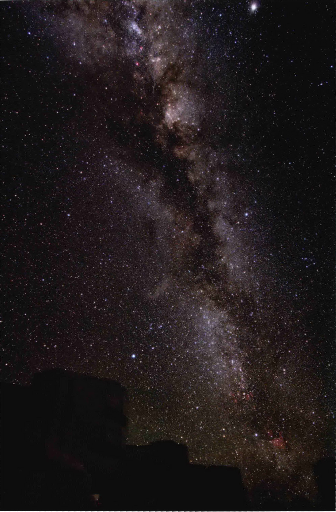

    <h1>第1章 天图量绘</h1>
    <div class="subtitle">天文学基础</div>

    <p>再也没有比晴朗黝黑夜晚的灿烂星空更壮观的自然景象了。静静地镶嵌上饱含古老神话和传奇的星座，夜空激发了古往今来人们的好奇心——引导着我们的想象超越地球的限制、跨越当前的时间，向外触及遥远的太空和宇宙时间本身。</p>

    <p>源于对这种好奇心的回应，天文学建立在人类两个最为基本的特性之上：探索的需求和求知的需求。在好奇、发现和分析的相互交织中——这也是探索和求知的关键——人们寻找着源于远古时期的有关宇宙的疑问的答案。天文学是所有科学中最为古老的科学，然而它却从没有像今天这般令人心旷神怡。</p>

    <!-- 侧边栏：知识全景 -->
    <aside class="sidebar">
        <span class="sidebar-title">知识全景</span>
        <p>本书的主题是科学，这意味着需要丰富的细节和具体的思想。即便如此，我们也需要在脑中保持宏大的、广泛的视角。涉及天文学时，或许宇宙中再也没有比恒星更为宏伟的特征了——它们在夜空中无处不在，如同对照图片中可见的那些星星点点。可观测宇宙中的恒星数目大概和世界上所有海滩上的沙粒数目一样多，即约10<sup>23</sup>颗。</p>
    </aside>

    <!-- 左侧图片说明 -->
    <div class="caption">
        <strong>左图：</strong>在高挂头顶的晴朗夜空中，我们可以看到一条布满恒星的条带，亦即银河（牛奶路）——因其像一条包含有数不清的星星的乳白色条带而得名。所有的这些恒星（或更多）都是一个叫作银河星系的大尺度系统的一部分，我们的恒星——太阳，就是其中的一名成员。这幅照片展示了无与伦比的灿烂银河系，它高高闪耀在欧洲南方天文台的一架大型望远镜之上，那是一台位于智利安第斯山脉高处的专业天文设备。[欧洲南方天文台 (ESO) Y. 贝莱特斯基 (Y. Beletsky)]
    </div>

    <!-- 学习目标 -->
    <div class="learning-goals">
        <span class="sidebar-title">学习目标</span>
        <p>本章的学习将使你能够：</p>
        <ol>
            <li>随尺度的增加排列宇宙的基本层次结构。</li>
            <li>区别科学理论、猜想和观测，描述科学家是如何在研究宇宙的过程中结合观测、理论和测试的。</li>
            <li>描述天球，并说明天文学家如何利用星座和角测量来定位天空中的天体。</li>
            <li>描述如何以及为什么太阳和恒星看起来每月、每夜都在改变它们的位置。</li>
            <li>解释地球自转轴的倾斜如何导致季节变化，以及季节为何随着时间在改变。</li>
            <li>说明月相的变化，并解释地球、太阳和月球的相对运动是如何导致日食或月食的。</li>
            <li>给出例子说明，简单的几何推理如何能够用于测量其他方法无法直接测到的物体距离和大小。</li>
        </ol>
    </div>

    <!-- 精通天文学链接 -->
    <div class="sidebar" style="background: #fff0f0; border-color: #ffcccc;">
        <span class="sidebar-title" style="color: #e74c3c;">精通天文学</span>
        <p>访问 MasteringAstronomy 网站的学习板块，获取小测验、动画、视频、互动图，以及自学教程。</p>
    </div>

    <h2>1.1 我们在太空中的位置</h2>

    <p>迄今为止，在所有科学见解中，有一个最为引人注目：地球既不是宇宙的中心，也不是独特的。我们居住在宇宙中一个并不独一无二的地方。特别是在过去的几十年内，天文学研究有力地说明了我们居住在一颗看似平常的岩石行星，亦即地球上，它是八个已知的绕一颗名为太阳的平常恒星运转的行星之一，而太阳位于一个拥有大量恒星聚集的名为银河星系的边缘，这个星系只是遍布可观测宇宙中数以亿计的星系中的一员。要初步了解这些不同类型的天体之间的关系，请查阅图1.1~图1.5。</p>

    <!-- 图片组 1.1 - 1.3 -->
    <div style="display: flex; gap: 10px; flex-wrap: wrap;">
        <div style="flex: 1; min-width: 200px;">
            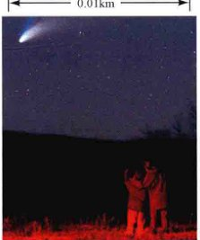
            <div class="caption"><strong>图1.1 人类</strong><br>我们清楚地知道我们自己的大小和高度。——成人一般高1.5m。而地球大约要比这大1000万倍。[J. 罗德里格斯]</div>
        </div>
        <div style="flex: 1; min-width: 200px;">
            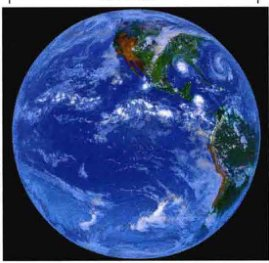
            <div class="caption"><strong>图1.2 地球</strong><br>地球是一颗行星，是一颗主要由固体组成的天体，虽然它的海洋和核心中由一些液体、大气中有气体。[NASA]</div>
        </div>
        <div style="flex: 1; min-width: 200px;">
            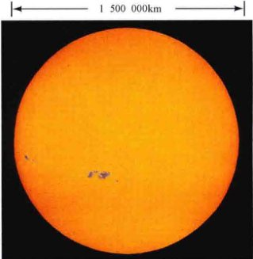
            <div class="caption"><strong>图1.3 太阳</strong><br>太阳是一颗恒星，是一颗非常炽热的气体球，主要由氢和氦组成。它的个头比地球要大得多——超过地球直径的100倍。[AURA]</div>
        </div>
    </div>

    <p>不仅是通过我们的想象，而且凭借着共同的宇宙传承，让我们与时空中最为遥远的领地联结在一起。组成我们身体的绝大多数化学元素（氢、氧、碳及更多种的元素）是从亿万年前就已经永久销声匿迹的炽热的恒星中心里产生的。当它们的燃料耗费殆尽后，这些巨大的恒星便会在猛烈的爆炸中毁灭，并将它们深深的核心中所产生的元素扩散到四面八方。最终，这些物质又聚集成气体云，并缓慢塌缩，引发新一代恒星的诞生。</p>

    <p>太阳和它的行星家族正是以这样的方式在大约50亿年前形成的。地球上所有事物都包含了来源于宇宙中其他部分的原子，以及在比人类进化之初更为遥远的过去所产生的原子。或许恰在此时，在某个地方，有其他的生命——也许具有比我们还要高得多的智慧——正在惊奇地凝望着他们自己的夜空。也许对于他们来说，我们自己的太阳不过就是一个无关紧要的光点——如果是可见的话。然而，如果有这样的生命存在，那他们一定和我们有同样的宇宙起源。</p>
    
    <p>简单地概括一下，宇宙是所有空间、时间、物质和能量的总体，而天文学是研究宇宙的学科。和其他的学科不一样，天文学需要我们彻底改变对于宇宙的看法，并从完全与日常经验不一样的尺度来看待事物。重新来看图1.4中的星系。这是一个有着约千亿颗恒星的群体——比地球上曾经生存过的人类总数还要多。整个集合蔓延在直径有100,000光年的巨大广阔空间中。虽然听起来像是一个时间的单位，但光年实际却是光线以300,000 km/s的速度在一年内所传播的距离。写出计算式来的话，光年等于 300,000 km/s × 86,400 s/天 × 365天，亦即10万亿千米，或大约6万亿英里 (1 mile ≈ 1.6 km)。典型的星系系统的大小才真正是“天文数字”。相比之下，地球的直径大约是13,000 km，还不到一光秒的1/20。</p>

    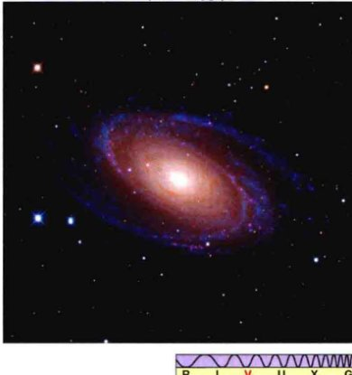
    <div class="caption">
        <strong>图1.4 星系</strong><br>
        一个典型的星系聚集了千亿颗恒星，恒星之间都相隔着几乎是真空的浩瀚空间。我们的太阳是一颗相当平凡的恒星，位于一个叫作银河系的星系边缘。[R. 根德勒]
    </div>

    <p>光年是天文学家引入的来帮助人们描述极大距离的单位。我们将在我们的学习过程中碰到许多这样的自定义单位。正如在附录2中详细讨论的，天文学家经常用额外的单位来扩展标准的SI (Système Internationale, 国际单位制) 单位系统，以适合正在处理的特别问题。</p>

    <p>一千 (1,000)，一百万 (1,000,000)，十亿 (1,000,000,000)，甚至是万亿 (1,000,000,000,000) ——这些词语经常出现在我们的日常对话中。让我们花一点时间来理解这些数字的量级并鉴别一下它们之间的区别。1000足够简单并容易理解：以每秒一个数字的速度，你可以在1000s内数到1000——大约16min。然而，如果你想数到一百万，以每秒一个数字的速度，每天数16h（准许你每天睡8h），那你将需要超过两个星期的时间才能完成。同样，以每秒一个数字的速度，每天数16h，你将需要差不多50年才能从一数到十亿——这是人的一生中较美好的一段时间。</p>

    
    <div class="caption">
        <strong>图1.5 星系团</strong><br>
        这幅照片展示的是一个典型的星系团，它在空间中蔓延了约100万光年。其中的每个星系都包含着千亿颗恒星，或者还有行星，可能还有生命存在。[NASA]
    </div>

    <p>本书中，我们考虑的空间距离跨越了不止几十亿千米，而是几十亿光年；天体包含不止万亿个原子，而是万亿颗恒星；时间间隔不止是几十亿秒或小时，而是几十亿年。你们将需要熟悉——并享受——这样一些庞大的数字。一个好的开始学习的方法是：认识比一千大多少是一百万，而比一百万大多少是十亿。附录1说明了科学家们用于记录和运算非常庞大或非常小的数字的简便方法。如果你对这种方法不太了解，请仔细阅读该附录——这里所描述的<strong>科学计数法</strong>将从第2章起，在本书中会一直使用。</p>

    <p>由于缺乏对所观测的天体的认识，于是早期的观天者编造故事来解释它们：太阳是被一辆由飞马牵引的战车载着拉过天空的，恒星构成的图案可追溯至天神放置在天空中的英雄和动物。我们所见的恒星是遥远的、炽热的圆球，比我们的整个地球大几百倍，它们构成的图案跨越了好几百光年。在第1章里，我们会介绍一些天文学家用来绘制我们周围空间的基本方法；我们还会描述科学知识的缓慢进展，从战车和天神到今天已经验证的理论和物理定律，用以解释为什么我们现在用科学来帮助我们解释宇宙，而不是用神话故事。</p>

    <h2>1.2 科学理论和科学方法</h2>

    <p>我们该怎样开始认识围绕我们的宇宙呢？该如何认识从图1.1~图1.5中所描绘出的宇宙透视图呢？已知的对宇宙最早的描述主要建立在想象和神话之上，而很少试着用已知的尘世间的经验来解释天空的运作。然而，一些早期的科学家们开始意识到仔细观测并测试他们的构想的重要性。他们的成功方法步步为营地改变了科学开筑的道路，开启了进一步全面理解自然的大门。随着逻辑和推理论证的影响力与日俱增，神话的力量减弱了。人们开始更努力地探究和钻研自己和宇宙。他们认识到，思索自然已不再足够——关注自然也是必需的。实验和观测成为探寻知识的过程中的核心部分。</p>

    
    <div class="caption">
        <strong>图1.6 科学方法</strong><br>
        科学理论的发展离不开观测、理论推导和预测的结合，并且需要提出新的观测。这一过程可以开始于图中循环的任意一点（虽然一般都从观测开始），并永远持续下去；或者直到理论无法解释观测或做出了明显错误的预测。
    </div>

    <p>为了变得高效，理论——用于解释某些观测并预言真实世界的观点及假想的框架——必须不断地接受验证。科学家实现了这个目标，利用理论建立了物理天体（比如行星或恒星）或者是现象（比如重力或光线）的<strong>理论模型</strong>，用来解释已被了解的属性。然后利用模型进一步地预测这些天体的性质，或是预测它们在新环境下可能的运动或是变化。如果实验和观测证实了这些预言，理论就能进一步完善和精炼。如果不符，那么理论就必须再次论述或是被丢弃，不管最初它看起来是如何的吸引人。这种方法类似于调研，结合了思考和操作，亦即理论和实践，因此被称为<strong>科学方法</strong>。如图1.6所示，这种结合了理论推导和实验验证的过程是现代科学的核心，可用于区分科学与伪科学、事实与虚构。</p>

    <p>理论必须经过测试，而可能会被证明有错的观念有时会让人们忽视它们的重要性。我们都曾听到过这样的表述“当然，这仅仅是个理论”，这常用来嘲笑或忽视某些人的不被接受的观点。不要被愚弄了！万有引力（见2.7节）就“仅仅”是个理论，但基于它的运算引导着人类的宇宙飞船飞越了太阳系。电磁学和量子力学也是理论，然而它们已成为科技的基础。宇宙中类似的现象比比皆是。理论是智慧“黏合剂”，将看似无关的事实组合成连贯和相通的整体。</p>

    <p>注意，图1.6中所描述的过程没有终点。一次错误的预测会使理论作废，但再多的观测或实验也不能证明理论“正确”。当理论预测反复被确认时，理论也就会变得越来越被广泛接受。现代科学理论有下列几个共同的重要特征：</p>
    <ul>
        <li><strong>理论必须是可测试的</strong>——也就是说，它们必须接受这样的可能性，理论的基本假设和预测在原则上可以通过实验来验证。这个特性用以区分科学与其他，例如，宗教、因果、宿命、神启或经文都无法在宗教体系中被挑战——我们不能设计一个实验来“证明上帝的心智”。可测试性也可用于区分科学和伪科学，如占星术，其基本假设和预测一直在被反复测试，却从未被验证过，但没有明显影响那些继续相信占星术的人的观点。</li>
        <li><strong>理论一定要不断地被测试</strong>，并且其结果也能被测试。这就是图1.6中描述的科学过程的基本循环。</li>
        <li><strong>理论应该是简单的</strong>。如果不能经过几个世纪的科学经验的实践检验，那么简单性至少是必需的——最成功的理论往往是最简单且符合事实的。这一观点常常可以归结为一个被称为“奥卡姆剃刀” (Occam's razor) 的原则：如果两个相抵触的理论都能解释事实并有相同的预测，那么最简单的那个是最好的。换句话说，“保持简单”！一个好的理论不应当包含不是绝对必要的复杂性。</li>
        <li>最后，大多数科学家都有额外的癖好，理论应该在某种意义上是<strong>优雅的</strong>。当一个清晰阐明的简单原则自然地与一些此前被认为是完全不相干的现象紧密联系在一起，并能解释它们时，便会被广泛认为是有力支持该新理论的论点。</li>
    </ul>

    <p>现代科学的诞生往往与文艺复兴密不可分，在14世纪末到17世纪中叶的历史时期内，在经历了黑暗时代的混乱之后，艺术、文学和科学探索在欧洲文化里重生。然而，最先记录下来的有天文背景的科学方法应用之一是亚里士多德（公元前384—公元前322年）在大约2300年前实现的。通常，亚里士多德并不是因为他是这种方法的坚定倡导者而为人所知——他的许多最为著名的观点都是基于纯粹的思考，没有尝试过实验测试或验证。无论如何，他的才华触及很多如今被认为是现代科学的领域。他指出，在月食期间（见1.6节），地球在月球表面会投下弯曲的影子。图1.7显示了一次月食期间拍摄的一系列照片。地球的影子投影在月球的表面，的确是稍稍弯曲的。亚里士多德在很久以前一定看到并记录过这一点。</p>

    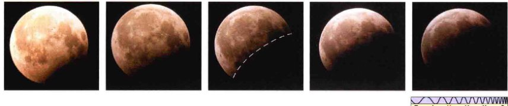
    <div class="caption">
        <strong>图1.7 月食</strong><br>
        这些照片显示地球的影子在一次月食期间扫过月球表面。通过观测月食过程，亚里士多德认为地球是阴影的来源，并推断地球一定是圆形的。他的理论一直没有被认为是错误的。[G. 施耐德]
    </div>

    <p>因为观测到的影子似乎一直是一个相同圆上的弧，所以亚里士多德推断地球——这个阴影的制造者——一定是圆的。不要低估这个看似简单的论断的作用。亚里士多德也必然认为黑暗区域确实是影子，而地球则是造成影子的原因——现今的我们认为这是显而易见的事实，但在2500年前，人们却对此一无所知。在此猜想的基础之上——观测事实有个可能的解释——亚里士多德接着预测，所有未来的月食中显现的地球阴影都是弯曲的，不管我们行星的方向如何。这样的预测已经被每一次发生的月食所验证了。这仍然没有被证明是错误的。</p>

    <p>亚里士多德并不是第一个认为地球是圆形的人，但他显然是第一个利用月食的现象提供观测证据的人。</p>

    <p>这种基本的推理形成了现代科学调查的基础。仅仅依靠肉眼观测天空（望远镜差不多在此后2000年才被发明出来），亚里士多德首先进行了观测；接下来，他提出了一个假说来解释观测；然后，通过建立可以被进一步的观测确认或是反驳的预测，他验证了假说的有效性。观测、理论和测试——这是科学方法的基石，这种方法将贯穿全文、反复地证明自己的作用。</p>

    <p>如今，世界各地的科学家使用的方法在很大程度上依赖于测试。他们收集数据、建立工作假说来解释数据，然后利用实验和观测来测试假说所涉及的内容。最终，一个或者更多“有效验证”的假说可能会被提升到物理定律的高度，甚至开始成为更为广泛适用的理论的基础。理论的新预测会被一一测试，科学知识也会随之增长。实验和观测是科学探究过程中不可或缺的部分。不可测试的理论或是不被实验事实支持的理论，罕有在科学界获得任何程度上的认可。在正确使用一段时间之后，这种合理的、有条不紊的方法将使我们能够得出结论，基本不受任何一个科学家的个人偏见和价值观的影响——正是用科学方法才导出了我们对所处宇宙的客观认识。</p>

    <div class="concept-check">
        <h4>科学过程理解检查</h4>
        <p>科学一点讲，理论能否成为“事实”？</p>
    </div>

    <h2>1.3 “显而易见”的风景</h2>
    
    <p>要了解天文学家如何利用科学方法来了解我们周围的宇宙，让我们先从一些最基本的观测开始。研究宇宙，研究现代的天文学，可以简单地从仰望夜空开始。夜空的整体形象现在看起来和我们祖先在数百甚至数千年前看到的没有什么不同。但随着天文学的发展和壮大，我们对于我们所见的阐释却已不可估量地改变了。</p>

    <h3>天上的星座</h3>
    
    <p>在日落和日出之间的晴朗夜晚，我们可以看见大约3000个光点。如果把从地球的另一边看到的也包括进来，那大约有6000颗恒星是我们肉眼可见的。人的本性倾向于将天体之间的关联与图案联系起来，即便它们不存在真正的联系。很早以前，人们就将最亮的恒星连接搭配在一起，并称之为<strong>星座</strong>——古代天文学家以神话事物、英雄和动物这些对他们来说重要的东西去命名星座。图1.8显示每年10月至来年3月的夜空中尤为突出的星座：猎户座俄里翁 (Orion)。俄里翁是希腊神话中的著名英雄，除了一些其他的著名事迹外，他还因热情地追求昴星团Pleiades（普勒阿得斯七姐妹）——巨人阿特拉斯的七个女儿而出名。根据希腊神话，为了使昴星团免受猎户座的骚扰，天神将她们放置在群星之间，猎户座每晚都在天空中悄悄地跟踪她们。许多星座都同样难以置信地联结着古老的传说。</p>

    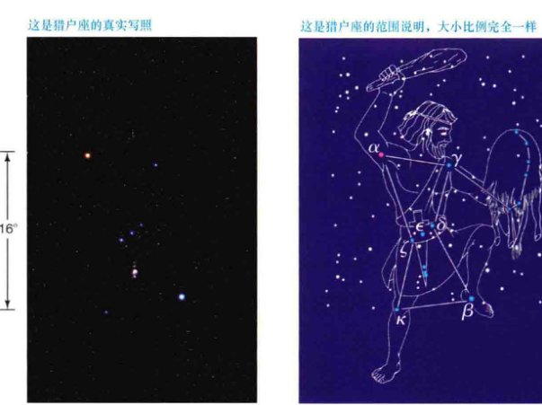
    <div class="caption">
        <strong>互动图1.8 猎户星座</strong><br>
        (a) 构成猎户星座的一群亮星的照片。（底部的图标简单表明这是可见光波段的图像，图示说明见前言）。<br>
        (b) 恒星连接起来显示出希腊人想象中的图案——一名猎人的轮廓。希腊字母用于识别该星座中的一些亮星（参见图1.9）。通过识别猎户“腰带”上连成一线的三颗亮星，可以很容易地在北方冬天的夜空中找到猎户座。[P. 桑茨 / 阿拉米 (Alamy)]
    </div>

    <p>或许这并不奇怪，星空图案有着强烈的文化偏好——古代中国的天文学家看到的神话图案不同于古代希腊人、巴比伦人，以及其他文化的人，即使他们看到的都是夜空中相同的恒星。有趣的是，不同的文明经常有着相同的基本恒星组群，尽管他们对所见的解释大相径庭。比如，在北美通常被叫作“长柄勺” (the Dipper) 的七颗恒星的组群（北斗七星），在西欧被称为“马车” (the Wagon) 或者是“犁耙” (the Plough)。古代希腊人把这些恒星看作是大熊（座）的尾巴，埃及人认为它们是头公牛的腿，西伯利亚人认为是牡鹿，一些美洲土著居民则认为是送葬的队伍。</p>

    <p>早期的天文学家有着非常现实的理由去研究天空，比如一些星座能在航海导向中使用。北极星Polaris（小熊座的一部分）指向北方，它在夜空中的位置几乎是恒久不变的，时时刻刻、日日夜夜，它指引了旅行者几个世纪。其他一些星座发挥原始日历的作用来预测种植和收获的季节。比如，许多文明知道某些恒星在黎明前出现在地平线上时，就预示着春天的来临和冬天的结束。</p>
    
    <p>在许多社会文明中，人们相信，如果能够跟踪天体有规律的位置变化，就会有其他的益处。人们出生时的恒星和行星的相对位置被占星家们仔细研究，并利用这些数据来预测人的命运。因此，在某种意义上，天文学和占星术源自相同的初衷——“预见”未来。在很长的一段时间里，二者确实无法被区分开来。如今，大多数人认识到，占星术只不过是有趣的消遣（尽管数以百万计的人仍然每天早上在报纸上研究他们的星象）。虽然如此，但古代占星学术语——星座的名字和许多用来描述行星位置和运动的术语——仍然在整个天文界中使用。</p>

    <p>一般来说，以图1.9中所示的猎户座为例，构成任何特定星座的恒星实际上在空间中彼此并不接近，即便是以天文的标准来看。他们仅仅是足够明亮，能用肉眼看到，并且碰巧从地球上看来位于天空中大致相同的方向。不过，星座为天文学家提供了便利的方法来指定天空中的大块区域，就像地质学家用大陆或政治家用选区来识别地球上的某些位置一样。图1.10展示了传统定义上的星座，覆盖了猎户座附近的一部分天空。总的说来，全天有88个星座，它们中的大多数每年在北美洲都有一段时间可见。</p>

    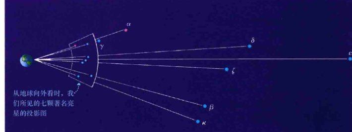
    <div class="caption">
        <strong>图1.9 猎户座的三维关系图</strong><br>
        猎户座中最闪耀的恒星的三维关系图。恒星间的距离是20世纪90年代的依巴谷卫星所测量得到的。
    </div>

    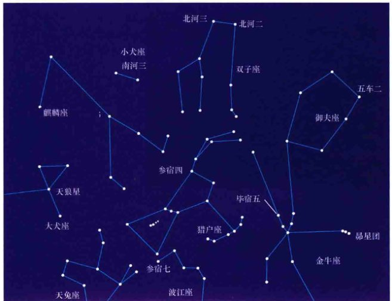
    <div class="caption">
        <strong>图1.10 猎户座附近的星座</strong><br>
        传统的猎户星座以及一些邻近的星座（以大写单词标示）。一些著名的亮星也用小写单词标示出来。88个星座覆盖了整个天空，每一个天体都位于其中的一个星座中。
    </div>

    <h3>天球</h3>

    <p>夜晚时分，星座似乎在从东向西缓缓穿过天空，但古代的观天者都知道，恒星的相对位置并不随着这种夜间发生的运动而变化。自然而然地，那些观测者认为，恒星一定是牢牢附着在环绕地球的<strong>天球</strong>上的——一个粘满恒星的穹盖像一幅天文绘画一样挂在神圣的天花板上。图1.11显示了早期的天文学家是如何描绘恒星随着天球绕着固定不动的地球运动的。图1.12显示了所有的恒星如何绕着非常靠近于北极星的一点做圆周运动的。对古人来说，这一点代表了整个天球旋转所围绕的轴。</p>
    
    <p>如今，我们已经认识到恒星的视运动不是因为天球，而是由于地球的旋转，或者说是<strong>自转</strong>造成的。北极星指示的方向——正北——就是地球自转轴的指向。尽管我们现在知道天球不正确地描述了天空，但我们仍然使用这个虚构的概念，以帮助我们形象地表示恒星在天空中的位置。</p>

    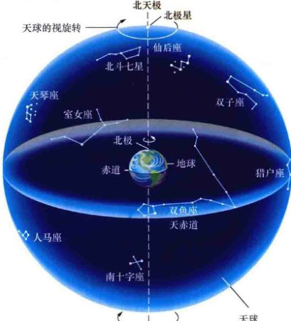
    <div class="caption">
        <strong>互动图1.11 天球</strong><br>
        行星地球固定在天球的中心，所有的恒星都在天球上。这可能是最简单的宇宙模型之一了，但它并不符合现在天文学家所知的一切有关宇宙的事实。
    </div>

    <p>地球自转轴和天球的交点被称为<strong>天极</strong>。在北半球，北天极正好位于地球北极的正上方。延长地球自转轴到相反方向便是南天极——地球南极的正上方。介于北、南天极正中的是<strong>天赤道</strong>，代表的是地球赤道平面和天球的交线。这些天球的组成部分都标示在图1.11中。</p>
    
    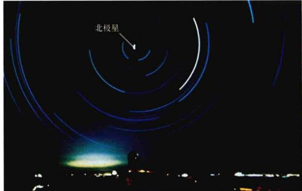
    <div class="caption">
        <strong>互动图1.12 北方夜空</strong><br>
        一幅北方夜空的延时曝光图。每个弯曲的踪迹都是一颗恒星划过夜空的路径。曝光持续了约5h，每颗恒星都划出了大约1/5个圆弧。这些同心圆以北极星附近为中心，而北极星则划出了短而亮的弧。[美国大学天文联盟 (AURA)]
    </div>

    <p>我们现在知道，恒星其实也有相对运动，但这种横穿天空的自行太慢，以至于无法用肉眼辨别。讨论恒星“在天空中”的位置时，天文学家自然而然地就会用到“角”位置和“角”分辨的术语。详细说明1-1中介绍了一些有关角测量的基本知识。</p>

    <div class="concept-check">
        <h4>概念理解检查</h4>
        <p>为什么天文学家发现保留天球这个虚构的概念会有助于描述天空？当我们谈论恒星在“天上”的位置时，丢失了哪些重要的信息？</p>
    </div>

    <h2>1.4 地球的轨道运动</h2>

    <h3>周日变化</h3>

    <p>我们利用太阳来测量时间。规律的日夜交替对我们的生活极为重要，因此我们把从正午到下一个正午之间的时间间隔，亦即24h的<strong>太阳日</strong>，作为基本的社会时间单位，这并不出人意料。太阳和其他恒星每天在天空中的运动被称为<strong>周日运动</strong>。正如我们所已知的，这是地球自转的结果。但恒星在天空中的位置在不同的夜晚却不尽相同。每个晚上，相对于地平线来说整个天球看起来像是比前一晚移动了一点。最简单的确认这种差异的方法是观测刚好在日落之后或日出之前出现的恒星。你会发现与前一晚相比，它们的位置会稍微有些变化。由于存在这种移动，通过恒星来度量的天——即<strong>恒星日</strong>，源于拉丁语“sidus”，意为“恒星”——与太阳一天的长度有所不同。显然，比起简单的转动来，有视运动的天空更为复杂。</p>

    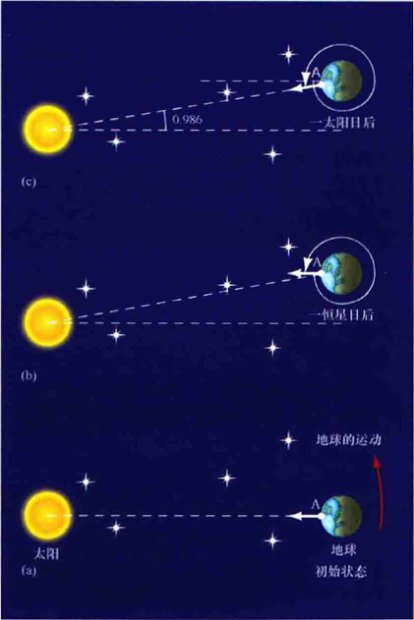
    <div class="caption">
        <strong>图1.13 太阳日和恒星日</strong><br>
        一恒星日是地球真实的自转周期——我们的行星自转回到空间中相对于遥远恒星的同一方向所花费的时间。一太阳日是两次相邻的正午之间的时间。一旦我们了解地球在绕太阳公转的同时也在绕其自转轴自转，那么解释这两种定义的时间长度的差异就比较容易了。图(a)和(b)相隔一恒星天。在这段时间里，地球刚好绕其自转轴旋转了一圈，同时也沿绕太阳的公转轨道移动了一点——大约是1°。因此，从指向A点的某天正午到下一次指向同一点的正午，地球实际上旋转了大约361° (c)，太阳日因此比恒星日要长约4min。注意本图没有按比例显示，真实的1°角实际比这里显示的要小得多。
    </div>

    <p>造成太阳日和恒星日之间差异的原因梗概显示在图1.13中。这是由于地球同时以两种方式运动所造成的——地球绕其中心轴自转的同时还绕着太阳公转。每当地球绕其自转轴旋转一周时，它也沿围绕太阳的轨道移动了一小段的距离。因此地球需要旋转比360°（360°—见详细说明1-1）稍微多一点，才能让太阳回到天空中的同一视位置。因此，某天正午到下一天正午（太阳日）的时间间隔要比真实的自转周期（一恒星日）要稍微长一点。我们的行星绕太阳运动一周要365天，因此多转的角度是 360°/365 ≈ 0.986°。由于地球的自转速度是 15°/h，转过这个角度需要花大约3.9min，因此一个太阳日要比一个恒星日长3.9min（即1恒星日大约是23小时56分钟）。</p>

    <!-- 侧边栏：详细说明 1-1 -->
    <aside class="sidebar">
        <span class="sidebar-title">详细说明 1-1 角度测量</span>
        <p>测量长度和角度通常要给出大小和尺寸。长度测量的概念对我们大多数人来说是相当直观的。我们可能不太熟悉角度测量的概念，但如果牢记以下的几个简单事实，角度测量便能水到渠成：</p>
        <ul>
            <li>完整的圆有360度 (arc degree, 记为360°)。因此，半圆，从地平线的这头延伸到那头，径直穿过头顶并在任何时候横跨天空的可见部分，包含的度数便是180°。</li>
            <li>每1°的变化可以再进一步细分为度的分数，即<strong>角分</strong> (arc minute)。1°里包含了60角分（记为60'）。（术语“角”用于区分角度单位和时间单位。）太阳和月球在太空中投影的大小都是30'（半度）。保持你的小指头距离一只手臂远时，角度大小也和此接近，占约40'，只是180°长的地平线的一小部分。</li>
            <li>一个角分也能被分为60<strong>角秒</strong>（arc second，记为60"）。换句话说，一角分是1/60度，而1" = 1/60 × 1/60 = 1/3600度。1"是非常小的角度测量单位——相当于在大约2km（比一英里多一些）的距离上观看1cm大小的物体（比如说一角的硬币）时，看起来的角大小。</li>
        </ul>
        <p>附图说明了如何将圆逐渐细分成更小的单位。不要混淆用于测量角度的单位。角分和角秒与时间测量丝毫无关，角度与温度测量也毫无关系。度、角分、角秒是衡量宇宙中物体大小和位置的简单方法。</p>
        <p>物体的角大小取决于它的实际大小和到我们的距离。比如，以目前月球到地球的距离，它的角直径是0.5°，或者说30'。如果月球的距离是现在的两倍远，那么它看起来就会只有现在的一半大——角直径为15'——而月球的实际大小并没有变化。因此，角大小本身并不足以确定一个物体的实际直径——除非物体的距离也已知。详细说明1-2中将更仔细地讨论这一点。</p>

    </aside>

    <h3>季节变化</h3>

    <p>图1.14(a)中显示在晴朗的夏日，美国的大多数地点能够看见的主要恒星。最亮的恒星——织女星、天津四和牛郎星（河鼓二）——组成一个明显的三角形，高挂在靠近南方地平线的人马座和摩羯座之上。然而，在冬夜星空中，这些恒星将被图1.14(b)所示的另外一些恒星和著名的星座所替代，其中包括猎户座、狮子座和双子座。天狼星（狗星）位于大犬座，是天空中最亮的恒星。年复一年，一样的恒星和星座在恰当的季节又重新出现。每个冬夜，猎户座都高挂头顶；每个夏夜，则消失不见。（要查看不同季节更为详细的星图，请查阅本书结尾的星图。）</p>

    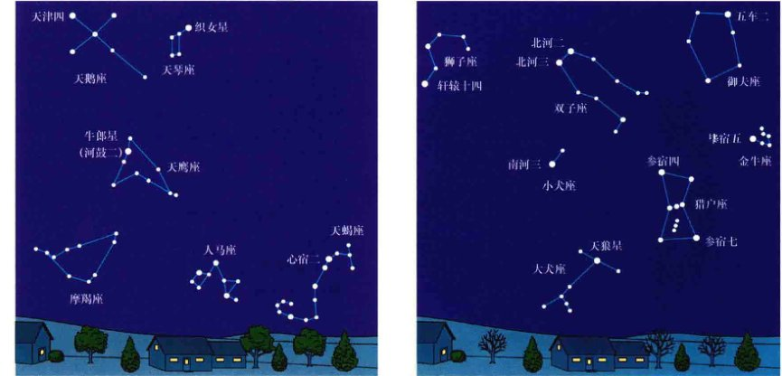
    <div class="caption">
        <strong>图1.14 典型的星空</strong><br>
        (a) 一个典型的美国夏夜星空。图中显示了一些亮星和星座。<br>
        (b) 一个典型的美国冬夜星空。
    </div>

    <p>这样有规律的季节变化是由于地球围绕太阳<strong>公转</strong>造成的：每晚地球黑暗的半球面对的空间方向都有小小的不同。变化的程度仅仅是每晚约1°（图1.13）——太小甚至在两晚后也很难用肉眼发觉，但经过几周或几个月的时间后，变化无疑是显而易见的。6个月以后，地球运动到其公转轨道上相对的位置，我们在夜晚面对的将是完全不同的一群恒星和星座。由于这种运动，太阳看起来（对于地球上的观测者来说）相对于恒星背景又运动了一年的时间。太阳在空中的这种视运动在天球上划出一道叫作“<strong>黄道</strong>”的轨迹。</p>

    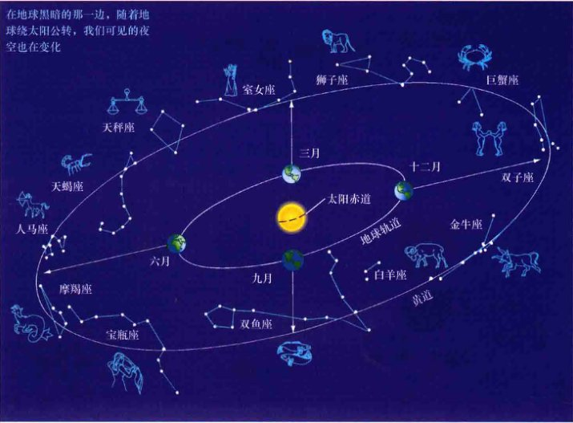
    <div class="caption">
        <strong>互动图1.15 黄道十二宫</strong><br>
        一年中不同的时间，地球上夜晚的那面会面向不同的星座。图中给出名字的12个星座组成了占星学中的黄道十二宫。箭头指示出一年中不同时期的夜空中最为突出的黄道星座。比如，在六月，当太阳“处于”双子座时，夜空中可见人马座和摩羯座。
    </div>

    <p>对以前的占星家来说，太阳在黄道上运动时穿过的12个星座——如果不是被太阳的光芒所掩盖，我们在朝向太阳的方向上就会看到这些星座——有着特别的意义。这些星座被统称为“<strong>黄道十二宫</strong>”。</p>

    <p>如图1.16所示，黄道在天球上形成一个大圆，与天赤道的夹角是23.5°。实际上，正如图1.17所示，黄道面是地球公转轨道平面。黄道的倾斜是因地球自转轴与其公转轨道之间存在夹角而造成的。</p>

    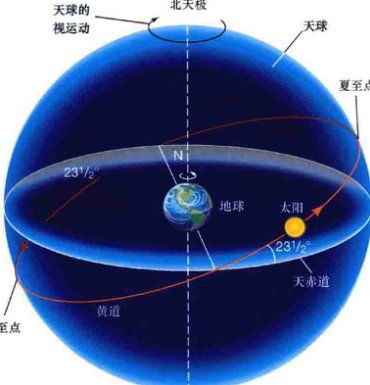
    <div class="caption">
        <strong>图1.16 黄道</strong><br>
        太阳在一年中沿天球运动的视路径被叫作黄道。如图所示，黄道与天赤道有23.5°的夹角。图中所示的天空中，季节变化导致太阳到天赤道的高度发生改变。在夏至，太阳在黄道上最靠北的一点上，因而此时从北半球看，太阳在空中最高，白天也最长；在冬至时则正相反。在春分和秋分时，太阳穿过天赤道，昼夜长度相等。
    </div>

    <p>当太阳位于相对于天赤道最北的一点时，黄道上的这一点被称为“<strong>夏至点</strong>”（取自拉丁词sol，意为“太阳”，以及“stare”，意为“站”）。如图1.17所示，这一点代表的是，当地球北极指向最靠近太阳指向的方向时，太阳在地球公转轨道上的位置。此时大约是每年的6月21日——具体日期每年都稍有变化，因为一年的实际长度并不是天的整数。随着地球的自转，地球赤道以北在这一天受到太阳光照射的时间最长。因此，夏至对应于一年中北半球白昼最长的、南半球白昼最短的一天。</p>

    <p>六个月后，太阳位于天赤道下面的最南端（图1.16）——或者换句话说，北极此时距离太阳最远（图1.17）。这时我们迎来冬至（12月21日），地球上北半球白昼最短、南半球白昼最长的一天。</p>

    <p>地球自转轴相对于黄道的倾斜造成了我们所经历的四季变化——炎热夏季和寒冷冬月有着显著的温度差异。如图1.17所示，两种因素的结合导致了这种变化。首先，夏天比冬天的白天要长几个小时。要明白这是为什么，可以参看图中画在地球表面的黄线。（更明确一点，这些黄线对应于北纬45°——美国五大湖区或法国南部的大致纬度。）在夏季，黄线被太阳光照到的部分要多得多，更多的白天日光照射意味着受到的太阳能加热更多。其次，如图1.17中的小图所示，当夏季太阳高挂天空时，照射在地球表面的太阳光要更为集中——比冬天时覆盖的面积要小。这导致我们感觉太阳光更热。由于太阳在地平线上的最高处、白天时间最长，因此夏天通常要比冬天温暖得多，而冬天的太阳位置低、白昼短。</p>

    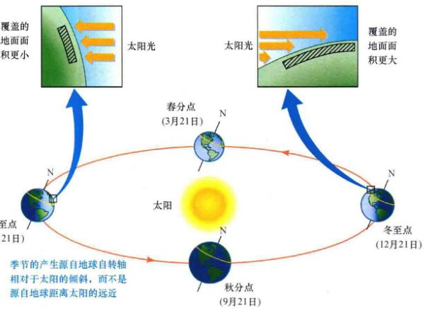
    <div class="caption">
        <strong>互动图1.17 季节</strong><br>
        地球上的季节变化源自地球自转轴相对于其公转平面的倾角。夏至点位于地球公转轨道上指向太阳与北极点最为接近的地方，冬至点则相反。春分和秋分点对应于地球公转轨道上，当地球自转轴垂直于地球与太阳连线时的位置。两幅小图显示，当太阳光倾斜地照到地面上时（如北半球的冬天时），比太阳光近乎直射时（如北半球夏天时）覆盖了更大的面积。因此，当太阳高挂在天空时，地球表面给定区域接收到的太阳热量是最多的。
    </div>

    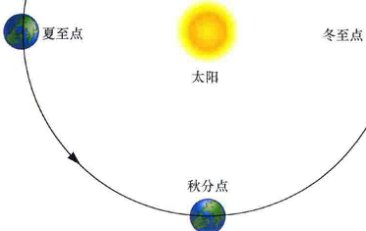
    <div class="caption">
        <strong>图1.18 地球轨道</strong><br>
        从上俯瞰，地球绕日轨道几乎是个完美的圆。日地距离在一年当中仅有微小的变化，并不是造成我们在地球上经历四季温差变化的原因。
    </div>

    <p>一个广泛的误解是认为季节变化与地球到太阳的距离有关。图1.18说明了为什么事实并非如此。图中显示了“俯瞰”的地球轨道，而不是像图1.17那样，从轨道的侧面看去。注意，地球轨道近乎是一个完美的圆，因此在一年内，地球到太阳的距离变化非常小（事实上，仅有3%的变化）——远不能解释季节性的温度变化。而且，实际上，地球最接近太阳是在一月初，即北半球的隆冬时分，因此到太阳的距离不是影响气候的主要因素。</p>

    <p>黄道与天赤道的两个交点（图1.16）——当地球自转轴垂直于日地连线时的位置——被称为<strong>二分点</strong>。在这些日子里，昼夜时间相等。（二分点equinox这个词来源于拉丁语，意为“equal night”，即昼夜平分。）在秋天（北半球），当太阳从北半球运动到南半球时，这一交点被称为<strong>秋分点</strong>（9月21日）。春分出现在北半球的春天，在3月21日左右，当太阳穿过天赤道向北运动时。由于春分点与冬天的结束和新的生长季节的开始联系在一起，因此在早期的天文学家和占星家看来，春分特别重要。它也在人类计时方面扮演着重要的角色：两次春分之间的时间间隔——365.2422平太阳日——被称为一个<strong>回归年</strong>。</p>

    <h3>长期变化</h3>

    <p>地球有许多种运动方式——绕轴自转、绕太阳公转，以及跟随太阳穿过银河系。我们已经了解到，这些运动有的导致了夜间星空的变换和季节的变换。实际情况更加复杂。一个旋转的陀螺在绕其自转轴高速自转的同时，其自转轴也在缓慢地绕垂直于地面的轴线旋转，类似地，地球自转轴随时间也在改变方向（尽管自转轴与垂直于黄道面的直线夹角总是保持在23.5°左右）。如图1.19所示，这种变化被称为“<strong>岁差</strong>”。是由于作用在地球上的力矩（扭转力）所造成的，它源自于月球和太阳的引力对地球的影响，大致与地球自身的引力对陀螺造成的力矩一样。在一个完整的岁差运动周期内——大约是26,000年——地球自转轴会描绘出一个锥形的轨迹。</p>

    <p>相对于恒星来说，地球完成绕太阳公转一圈所需的时间被称为一<strong>恒星年</strong>。一恒星年长约365.256平太阳日——比一回归年长约20min。地球的岁差运动是造成这种细微差别的原因。回想一下，春分发生在地球自转轴垂直于日地连线之时，此时太阳从南向北穿过天赤道。如果没有岁差，在一恒星年内，这将正好发生一次，回归年与恒星年将完全一样。然而，由于地球自转轴指向的缓慢进动，自转轴下一次与日地连线垂直的时刻将比期望的略微提前。因此，春分点随着岁差的周期运动会缓慢地沿黄道西移（“后退”）。</p>
    
    <p>回归年是我们日历中所用的年。如果我们依照恒星年来计时，随着地球的岁差运动，季节便会在日历上缓慢变化——13,000年前，北半球的夏季是在二月底到来！使用回归年能确保七月和八月总是（北半球的）夏季月份。然而，在13,000年后，猎户座将在夏夜星空中出现。</p>

    <div class="concept-check">
        <h4>概念理解检查</h4>
        <p>天文中，什么是夏天和冬天？为什么在这些季节看到的星座不同？</p>
    </div>

    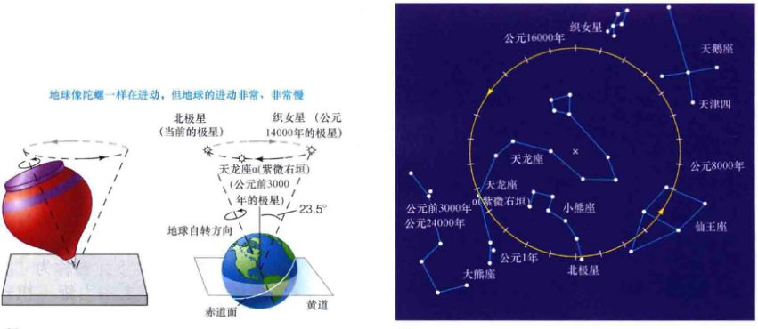
    <div class="caption">
        <strong>互动图1.19 岁差</strong><br>
        (a) 地球自转轴当前指向靠近北极星的方向。从现在起到约12,000年后——几乎是岁差周期的一半——地球的自转轴将指向织女星——那个时候的“北极星”。5000年前，北极星是天龙座里面的恒星天龙座α（紫微右垣）。<br>
        (b) 黄色圆圈显示了北天极在北半天球的亮星之间划出的岁差轨迹。每一刻度线的间隔为1000年。
    </div>

    <h2>1.5 月球的运动</h2>

    <p>月球是我们在太空中最近的邻居。除了太阳外、它也是天空中可见的最亮的天体。像太阳一样，相对于恒星背景，月球看起来也在运动。然而与太阳不同的是，月球实际上是在绕着地球运转。它每天在天空中大约运动12°。这意味着在大约1h的时间里，月球移过的角距离等于它自己的角直径——30'。</p>

    <h3>月相</h3>
    
    <p>月球的外观，即<strong>月相</strong>，有着规律的周期性变化，大约需要29.5天完成一次循环。图1.20显示在每月的不同时间，月球的不同面貌。从新月（朔）开始（此时月球在天空中几乎完全不可见），每晚月球看起来渐盈（增大）一点，逐渐可见日益变大的蛾眉月（图1.20中照片1）。朔后一周，我们可见月球圆面的一半（照片2）。此时的相位被称为<strong>上弦月</strong>。在接下来的一周内，月面继续增大，经过渐盈凸月阶段（照片3）；直到朔两周以后，才可见满月（望）（照片4）。在接下来的2周内，月球渐亏（缩小），依次经过渐亏凸月、下弦月、残月阶段（照片5~7），最终又回到新月（朔）阶段。</p>
    
    <p>从地球上看，月球在空中相对于太阳的位置也随着月相在变化。例如，随着太阳在西边落下，月球从东方升起，然而上弦月实际是在正午时分升起的，当天色渐晚，太阳光黯淡时，才能被看见。此时的月球早已高挂在天空中。图1.20给出了月相和月球出没时间的一些关系。</p>
    
    <p>当然，每个晚上的月球其实并没有改变大小和形状。月球圆面在任何时间一直都在。那么，为何我们见到的不一直是满月呢？这个问题的答案在于，与太阳和其他恒星不同，月球本身并不发光，它通过反射太阳光来发亮。如图1.20所示，任何时候，月球都只有一半的表面被太阳光照亮。然而，并不是月面上所有被太阳光照射到的地方都能被我们看到，因为月球相对于地球和太阳的位置在改变。满月（望）时，我们看到整个“亮面”，此时太阳和月球在天空中分别位于地球两边相对的地方。在新月（朔）时，月球和太阳几乎处于天空中同一方向，月球被照亮的一面背对着我们。朔时，从我们的角度来看，太阳几乎是躲在月球的后面。</p>

    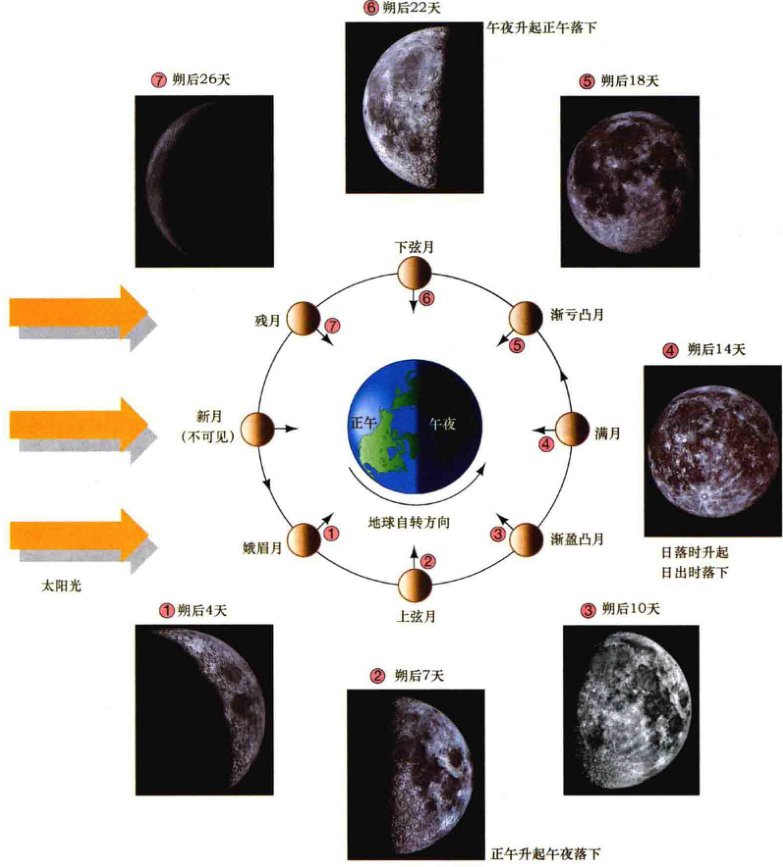
    <div class="caption">
        <strong>解说图1.20 月相变化</strong><br>
        由于月球环绕地球运动，所以月球被太阳光照射到的可见部分每晚都在变化，尽管月球始终是以相同的一面朝向地球的。（注意小而直的箭头所示的位置，它指的是在各个不同相位时，月球表面上的相同一点。）一个完整的月球相位周期需要29.5天，如从蛾眉月开始，沿月球轨道逆时针旋转所示。在某些相位，月球升起和下落的时间也一同标出。[加利福尼亚大学 (UC) / 利克天文台 (Lick Observatory)]
    </div>

    <p>随着月球绕地球运转，我们的卫星相对于恒星的位置也在天空中变化着。在1个<strong>恒星月</strong>内（27.3天），月球完成一次公转并回到天球上的同一起点，在天空中划出一个大圆。月球完成一次完整的相位周期所需的时间——<strong>朔望月</strong>，要稍微长一些——大约29.5天。朔望月比恒星月要长一点的原因同太阳日比恒星日要稍长的原因一样：由于地球绕太阳运动，所以月球必须完成比自转一圈多一点的运动，才能回到轨道上的同一个相位点（图1.21）。</p>

    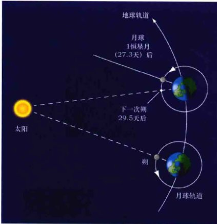
    <div class="caption">
        <strong>互动图1.21 恒星月</strong><br>
        朔望月与恒星月之间的差别源于地球相对于太阳的运动。由于地球绕日运动的轨道周期是365天，所以在两次朔之间的29.5天（1朔望月）里，地球运动的角度近似为29°。于是，月球在两次朔之间转过的度数一定会超过360°。因此，恒星月（月球相对于恒星背景正好公转360°时所花的时间）比朔望月要短约2天。
    </div>

    <h3>（日、月）食</h3>

    <p>有时——但仅在朔或者望时——从地球上看，太阳和月球恰好连成一线，此时我们将观测到被称为“食”的壮观天象。当从地球上看，太阳和月球刚好处在相对的位置时，地球的阴影会扫过月球，短暂地遮挡住太阳光并使月球变暗，从而形成月食，如图1.22所示。</p>

    <p>因此，地球的阴影并不是完全黑暗的。从地球上看，当月球和太阳恰好处在同一方向时，更加令人惊叹的景象就将发生。月球从太阳正前方经过，形成<strong>日食</strong>，将白天短暂地变为黑夜。<strong>日全食</strong>时，当三者完美对齐时，由于太阳光几乎被完全遮住了，使得大行星和一些恒星在白天也能被看到。同时，我们也能看到太阳幽灵般的外层大气，即<strong>日冕</strong>（图1.23）。日偏食时，月球的路径稍微“偏离中心”，仅会有部分的太阳表面被遮挡。不管是哪种日食，太阳似乎都被黑色圆盘似的月球所吞蚀，这种景象至今仍令人惊骇。无疑，这一定激起了早期观测者的恐惧。因而，将预测日食的能力看成是高度珍贵的本领也就不足为奇了。</p>

    <p>不像月食能够同时被地球处在夜晚那一侧的所有地方看到，地球处在白天的一侧仅有一小部分范围能看到日全食。月球投到地球表面的影子大约有7000km宽——大约是月球直径的两倍。而在阴影之外，是不能看见日食的。然而，在被称为<strong>本影</strong>的阴影中心部分，看到的是日全食；在本影之外的称为<strong>半影</strong>的阴影部分，看到的是日偏食；离阴影中心越远，太阳被遮蔽的部分会越少。</p>
    
    <p>月球表面上所形成的（同样的原因也会造成日落时呈现出同样的颜色——见详细说明4-1），从地球上看，地球弯曲边缘的阴影开始切过满月的表面，并慢慢蚕食月面。大多数时候，太阳、地球和月球的排列并非完全是一条直线，因此，地球阴影并不能完全覆盖住月球。这时发生的叫作<strong>月偏食</strong>。然而，整个月面偶尔会在<strong>月全食</strong>时被完全遮挡，正如图1.22中的小插图所示。月全食持续的时间和月球在地球阴影里穿行所需的时间一样长——不超过100min。在这段时间内，月球通常会呈现出诡异的红色——这是由于少量的太阳光被地球大气红化后折射折射到月球表面而发生的。</p>

    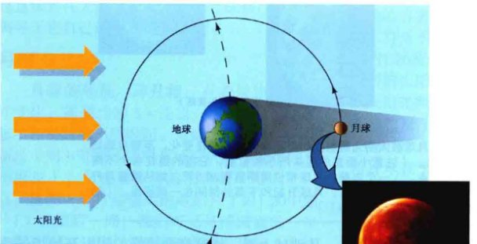
    <div class="caption">
        <strong>互动图1.22 月食</strong><br>
        当月球途经地球的阴影时，我们会看到一个变暗的、铜红色的月球，如小插图中的偏食所示。红色是由于地球大气将太阳光折射到月球表面而发生的。[插图：G. 施耐德]
    </div>

    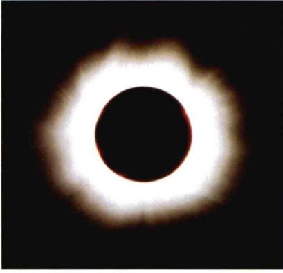
    <div class="caption">
        <strong>图1.23 日全食</strong><br>
        日全食期间，被遮蔽的日面周围可见的形状不规则的光晕是太阳日冕。这是在1999年八月发生的日食，观测地点位于保加利亚索菲亚附近的多瑙河畔。[B. 安格洛夫]
    </div>

    <p>本影和半影的联系，以及地球、太阳和月球的相对位置如图1.24中所示。本影的范围总是很小，即使是在最理想的情况下，它的直径也不会超过270km。由于阴影以超过1700km/h的速度扫过地球表面，所以日全食在地球上任意指定地点上的持续时间绝不会超过7.5min。</p>
    
    <p>月球环绕地球运动的轨道不完全是圆形的。因此，在日食发生时，月球可能距离地球很远，以至于月面不能将日面完全遮盖，尽管此时它们的中心连成一线。在这种情况下，日面上没有哪里会被完全遮挡——本影根本不会投到地球上，仍然会有一个细细的环绕月球的太阳光环能被看见。这样的现象被称为<strong>日环食</strong>，如图1.24(c)所示；更清晰的说明如图1.25所示。在所有已发生的日食中，约有一半是日环食。</p>

    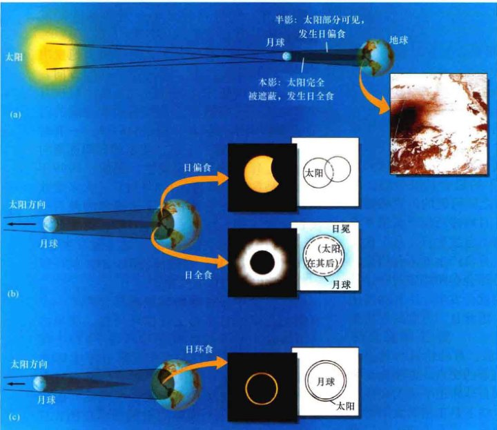
    <div class="caption">
        <strong>互动图1.24 日食的种类</strong><br>
        (a) 月球的阴影由两部分组成：本影，在其中看不到任何太阳光；半影，部分太阳光可见。<br>
        (b) 如果我们位于本影区，将会看到日全食；位于半影区，可见日偏食。<br>
        (c) 如果发生日食的时候，月球距离地球太远，本影就不能投影到地球上，也就不会发生日全食；相反地，发生的是日环食。（注意，这些图不是按比例绘制的。）[插图：美国国家海洋和大气管理局 (NOAA)、G. 施耐德]
    </div>

    <div class="image-placeholder" id="fig-1.25" data-bbox="[80, 80, 480, 380]" style="width: 50%; aspect-ratio: 1.0;" data-label="Fig 1.25 Annular Eclipse"></div>
    <div class="caption">
        <strong>图1.25 日环食</strong><br>
        日环食期间，月球不能完全遮蔽住太阳，还能看见细细的光环。这种情况下不能看到日冕，因为即使只有少量的太阳光可见，也能完全地淹没日冕微弱的光芒。图中是发生在1973年12月的日环食，观测地位于阿尔及利亚。（顶部左右灰色模糊的区域是地球大气中的云层。）[G. 施耐德]
    </div>

    <h3>食季</h3>

    <p>为什么不是每个朔都会发生日食，也不是每一次望都会发生月食呢？换而言之，为什么月球不是每次公转都正好经过地球和太阳之间，或者是每两周都正好穿过地球的阴影呢？</p>

    <p>答案在于，月球的轨道与黄道之间存在微小的夹角（角度为5.2°），因此在朔（或望）时，月球恰巧穿过黄道平面（地球、月球和太阳完美地排成一条线）的机会是极少的。图1.26显示了这三个天体之间可能的位置结构。如果在朔（或望）时，月球碰巧位于黄道平面的下面或上面，那么将不会发生日（月）食。这样的位置构型是日、月食产生的不利构型。在位于有利构型时，月球会在朔或望时穿过黄道平面，日、月食这时就会发生。不利构型比有利构型要更加普遍，因此日、月食的发生是罕见的。</p>

    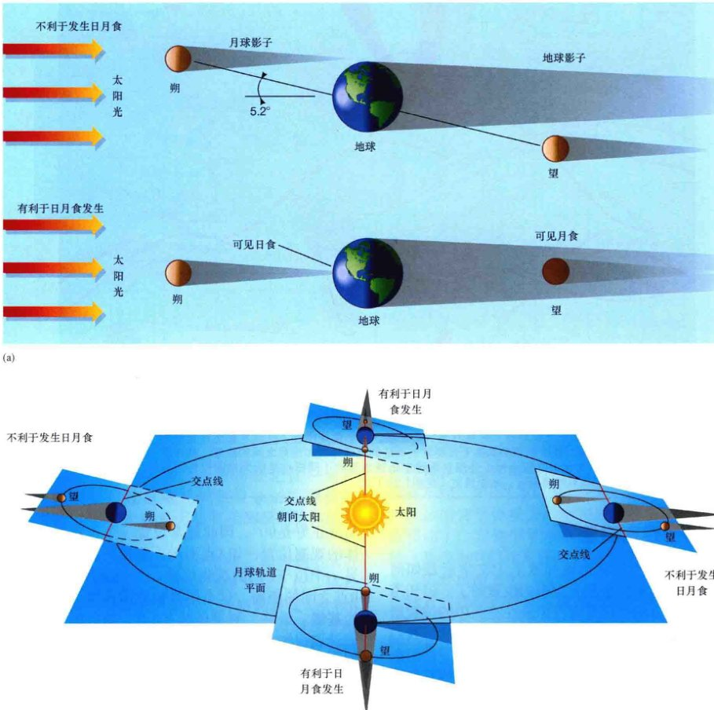
    <div class="caption">
        <strong>图1.26 日月食几何示意图</strong><br>
        (a) 日月食发生在地球、月球和太阳完全排成一线时。如果月球的轨道平面与黄道平面正好重叠，这种情况将每月发生一次。但月球轨道与黄道有5°左右的夹角，因此不是所有情况都有利于发生日月食。<br>
        (b) 日月食发生时，两个平面的交线一定沿地日连线方向。因此，一年中只有特定的时间才会有日月食发生。为清楚起见，图中只显示了天体的本影（见图1.24）。
    </div>

    <p>如图1.26(b)所示，月球轨道与黄道平面的两个交点被称为轨道的<strong>交点</strong>。连接交点的直线，亦即地球轨道和月球轨道平面的交线，被称为<strong>交点线</strong>。当交点线不是正指向太阳时，情况不利于发生食。然而，当交点线大致沿着地日连线方向时，食是有可能发生的。这两个时期被称为<strong>食季</strong>，是唯一可能发生日、月食的时候。注意，此时也不能保证日、月食一定会发生。对日食来说，食季期间一定要有一次朔（新月）。同样地，月食也只能发生在包含望（满月）的食季内。</p>

    <p>我们非常准确地知道地球和月球的轨道，因此可以预测遥远的未来会发生的日月食。图1.27显示了2010年到2030年期间所有日全食发生的地点和持续时间。有趣的是，日食的轨迹从西延伸到东——这与我们更为熟悉的日出和日落现象恰恰相反，越在东边的观测者能越早地看到日出或日落。原因在于月球阴影扫过地球表面的速度要快于地球自转，因此，日食实际上比地面的观测者运动得要快。</p>
    
    <p>我们所见的日食凸显了宇宙的非凡巧合。虽然太阳距离地球要比月球距离地球远许多倍，但太阳的个头也更大。事实上，距离之比几乎与大小之比一样，因此太阳和月球有着几乎相同的角直径——从地球上看，大约都是0.5°。这样，月球才能几乎完全遮住日面。如果月球更大一些，我们将永远不会看到日环食，而日全食会更为普遍。如果月球更小一些，那我们就只能看到日环食了。</p>

    <div class="image-placeholder" id="fig-1.27" data-bbox="[60, 60, 920, 420]" style="width: 100%; aspect-ratio: 1.8;" data-label="Fig 1.27 Eclipse Paths"></div>
    <div class="caption">
        <strong>图1.27 日食带</strong><br>
        图示为2010年至2030年之间地球上可见日全食的区域。每个食带代表了月球本影在日食期间扫过地球表面的路径。食带的宽度取决于日食发生轨迹的地理纬度和地月之间的距离。高纬度的食带要宽些，因为太阳在极地附近是倾斜地照在地球表面的（同样也是因为地图投影的原因）。日全食期间地月距离越近，本影越宽（见图1.24）。
    </div>

    <p>随着时间慢慢改变，太阳的引力拖曳决定了月球轨道的取向，亦即交点线的方向。因此，交点线指向太阳的位置构型（每次月球都会同样地穿越黄道）前后两次出现的时间间隔并不刚好是1年，而是346.6天——有时这被称为1个<strong>食年</strong>。于是，食季的日期逐渐向前推移，每年约早19天发生。例如，1999年的食季是在2月和8月，在8月11日，大多数欧洲和南亚的地方有幸目睹了千禧年的最后一次日全食（图1.23）。到2002年，食季悄然变到12月和6月，那一年的日食实际发生在6月10日和12月4日。通过研究图1.27，就可以跟踪食季发生的日期变化。</p>
    
    <p>结合食年和月球的朔望周期会产生一个有趣的长期的日（月）食循环周期。简单的计算表明，19个食年几乎恰巧等于223个朔望月。因此，每隔6585个太阳日（实际为18年又11.3天），“同样”的日、月食就会重现，地球、月球和太阳便会出现相同的相对位置构型。几个这样的重现展示在图1.27中——比如，2010年7月11日的日食轨迹（食带）会重现在2028年7月22日。（注意，我们必须要适当地考虑闰年才能得到正确的日期！）120°的经度变化大约对应于地球自转0.3天。这样的周期变化被称为<strong>沙罗周期</strong>。古代天文学家熟知这一点，这无疑是他们具有“神秘”的预测日月食能力的关键所在。</p>

    <div class="concept-check">
        <h4>概念理解检查</h4>
        <p>如果地球到太阳的距离变为现在的两倍，我们将看到什么类型的日食呢？如果距离变为现在的一半呢？</p>
    </div>

    <h2>1.6 距离测量</h2>

    <p>我们已经简约地知道了天文学家是如何跟踪和记录恒星在天空中的位置的了。但知道天体的方向仅仅是定位恒星在空间中的位置所需的信息之一。在系统地研究天空之前，我们必须要找到方法来测量“距离”。有一种距离测量的方法是<strong>三角测量</strong>，它以欧几里得几何原理为基础，在当今地学和天文领域中被广泛使用。测量员用这种古老的几何方法来间接测量遥远物体之间的距离。三角测量方法是距离测量技术家族的基础，而这些测量技术的测量结果构成了宇宙距离尺度。</p>

    <h3>三角测量和视差</h3>

    <p>想象一下如何测量与河对岸的树之间的距离。最直接的方法是带个卷尺穿过河，但这并不是最简单的方法（由于水的流动，这甚至也是没有可能的）。一名聪明的测量员会通过观测一个虚构的三角形（三角测量的来历）来进行测量，从附近岸边的两个位置观测另一边河岸上的树，如图1.28所示。最简单的三角形是直角三角形，其中一个角的角度正好是90°，因此通常设置一个正对着物体的观测位置，如A点所示。测量员接着移到另一个位于B点的观测位置，并记录下A点到B点之间的距离。这个距离被称为虚拟三角形的<strong>基线</strong>。最终，测量员站在B点，朝向树，并记录该视线方向在B点处与基线的夹角。已知直角三角形一条边(AB)的值和两个角的大小（A点处的直角和B点处记录的角度），测量员用几何学构造其他的边和角，并得到从A点到树的距离。</p>

    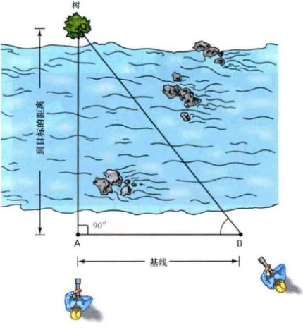
    <div class="caption">
        <strong>图1.28 三角测量法</strong><br>
        测量员常常采用三角测量法，利用简单的几何和三角几何来估计遥远目标的距离。通过测量A点和B点处的角度和基线的长度，不需要直接测量就能计算出距离。
    </div>

    <p>利用三角测量来测量距离，测量员必须要熟悉三角几何，这是有关几何角度和距离的数学运算。然而，即使我们完全不知道三角几何，我们也能通过图形化的方式来解决这个问题，如图1.29所示。假设我们步测基线AB，得到它的距离为450m，再测量基线与B点和树连线之间的夹角为52°，如图中所示。令图中每个格子表示地面上25m的距离，我们可以把问题转移到纸上进行。在纸上画出AB，并完成三角形的另外两条边，以及90°角（A点处）和52°角（B点处），我们测得纸上从A点到树的距离为23格——也就是575m。我们通过纸上建模解决了实际问题。这里需要记住一点：不需要任何比基本几何更复杂的东西就能推断过于遥远或是无法直接测量的物体的距离、大小和形状。</p>

    <div class="image-placeholder" id="fig-1.29" data-bbox="[600, 70, 950, 360]" style="width: 40%; aspect-ratio: 1.2;" data-label="Fig 1.29 Geometric Scaling"></div>
    <div class="caption">
        <strong>图1.29 几何缩放</strong><br>
        甚至不需要三角几何就能间接估计出距离。就像这张坐标纸上所示的那样，一般按比例估计就可以。
    </div>

    <p>显然，对于固定的基线，随着树到A点距离的增加，三角形会变得又窄又长。狭长的三角形会带来麻烦，因为精确测量A点和B点处的角度会变得困难。我们可以通过“增宽”三角形来使测量变得简单——即延长基线——但在天文中可以选择的基线长度是有限制的。例如，考虑一个从地球延伸到附近空间的天体的虚拟三角形，有可能是一颗附近的行星。即使是一个相当近的天体（按宇宙标准来说），这样的三角形也是极其狭长的。图1.30(a)展示了一个例子，利用了地球上可能的最长基线——地球直径来测量从A点到B点的距离。</p>

    <p>原则上，两名观测者可以从地球上相对的位置观测行星，并测量A点和B点处的角度。然而事实上，测量虚拟三角形的第三个角要更为简单。观测者朝向行星，记录下它相对于某些遥远恒星在天空中的投影位置。A点的观测者看到行星相对于图1.30(a)中的那些恒星的视位置为A'点，B点的观测者看到行星在B'点。如果每名观测者都拍摄天空中恰当范围的照片，那么两幅图片里行星出现的位置会稍有不同。如图1.30(b)所示，相对于视场中遥远的背景恒星，行星在照片中的图像稍稍移动了。背景恒星本身看起来没有产生位移，是因为它们距离观测者要更为遥远。</p>

    
    <div class="caption">
        <strong>图1.30 视差</strong><br>
        (a) 虚拟的三角形从地球延伸到邻近空间的一个天体上（例如一颗行星）。顶部的那群恒星代表着非常遥远的恒星背景视场。<br>
        (b) 在假想的同一恒星视场的照片中，显示了邻近天体相对于遥远的、不动的恒星的视位移。
    </div>

    <p>随着观测者的位置变化，前景目标相对于背景的视位移被称为<strong>视差</strong>。图1.30(b)中所示的位移大小，即在天球上测出的角位移，是图1.30(a)中的第三个小角。天文环境下的视差常是非常小的。例如，以地球赤道直径为基线观测月球上的一点得到的视差大约是2°；金星在最接近地球时（4500万千米），视差仅为1'（见详细说明1-2）。</p>
    
    <p>物体距离观测者越近，视差越大。图1.31正解释了这一点。将一支铅笔垂直地放在你的鼻子前面，并将眼神集中在某些遥远的物体上——比如，远处的墙。闭上一只眼睛，然后睁开并闭上另外一只眼睛。你应该会发现，铅笔投影在远处墙上的视位置大大地变化了——出现了大的视差。在这个例子中，一只眼睛对应于A点，另一只眼睛则对应于B点，两个眼球之间的距离是基线，铅笔对应于行星、远处的墙则对应于遥远的恒星背景视场。现在保持铅笔在一只手臂长的地方，对应于一个较为遥远的天体（但并不是和更遥远的恒星一样远）。铅笔的视位移这时将变小。你甚至可以验证视位移与到铅笔的距离是成反比的。移动铅笔到更远的地方，我们会使三角形变窄并导致视差变小（这也使精确测量变得更加困难）。如果将铅笔贴在墙面上，对应于要观测的天体和背景恒星视场一样遥远，换不同的眼观测根本不会产生铅笔的视位移。</p>

    <div class="image-placeholder" id="fig-1.31" data-bbox="[500, 90, 950, 520]" style="width: 50%; aspect-ratio: 1.0;" data-label="Fig 1.31 Parallax Geometry"></div>
    <div class="caption">
        <strong>图1.31 视差几何</strong><br>
        视差与物体的距离成反比。靠近鼻子的物体的视差比一臂远的物体的视差要大得多。
    </div>

    <p>视差的大小与天体的距离成反比。小的视差意味着远的距离，而大的视差则意味着近的距离。已知视差的大小（以角度表示）和基线的长度，我们可以很容易地利用三角测量方法得到距离。详细说明1-2更详细地探讨了角度测量和距离之间的联系，介绍了如何使用初等几何来确定遥远天体的距离和尺寸。</p>
    
    <p>大地测量员经常使用这样的简单几何方法来绘制地图。作为太空的测量者，天文学家采用了相同的基本原理来绘制天图。</p>

    <h3>测量地球大小</h3>

    <p>到此，我们学习了天文学家所运用的一些测量工具，让我们用一个经典的例子来结束这一章——科学方法结合刚刚介绍过的基本几何方法，早期的科学家们是如何进行一些真正“全球”性的计算的呢？</p>
    
    <p>大约在公元前200年，一位叫作埃拉托塞尼的希腊哲学家（前276—前194年）利用简单的几何推导计算了我们行星的大小。他知道夏季第一天的正午，埃及城市西奈（如今叫作阿斯旺）的观测者会看到太阳正过头顶。观测事实也表明了这点，因为垂直的物体没有影子并且太阳光照射到了深井的底部，如图1.32所示。然而，同一天正午时，在亚历山大，一个往北5000视距尺 (stadia) 的城市里，太阳的照射则稍微有些倾斜。（视距尺stadium是希腊的长度单位，大约等于0.16km——现代的阿斯旺城位于亚历山大南部约780km，或490mile处。）通过测量直杆影子的长度并应用初等三角几何，埃拉托塞尼测得太阳在亚历山大相对于铅垂线的角位移为7.2°。</p>

    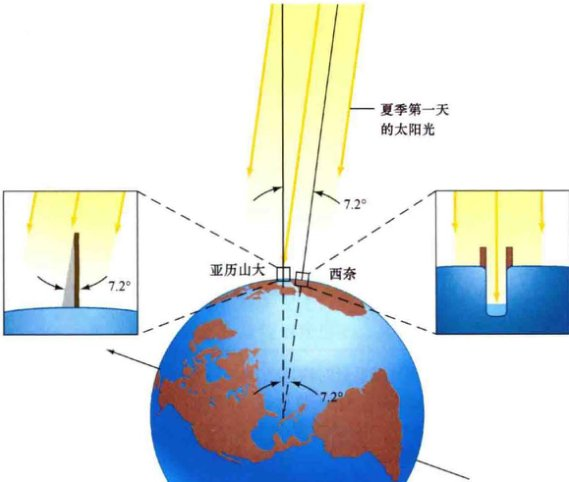
    <div class="caption">
        <strong>图1.32 测量地球半径</strong><br>
        太阳光以不同的角度照射到地球表面的不同部分。希腊哲学家埃拉托塞尼意识到这种不同源自于地球的弯曲，从而能用简单的几何来确定地球的半径。
    </div>

    <p>是什么导致了两次测量结果的差异？这不是因为测量错误而导致的——每次重复观测得到的结果都一样。相反，原因很简单（如图1.32所示）：因为地球表面不是平的，而是弯曲的。我们的地球是个球体。埃拉托塞尼并不是第一个意识到地球是球形的人——哲学家亚里士多德在此前100年就意识到了这一点（见1.2节），但埃拉托塞尼显然是第一个根据该知识，并结合几何和直接测量推断出地球尺寸的人。他的方法如下：</p>
    
    <p>到达地球的光线来自于像太阳这样的很遥远的天体，而且几乎是平行传播过来的。因此，如图所示，在亚历山大测得的太阳光与铅垂线（即亚历山大与地心的连线）之间的夹角，等于从地心处看来西奈与亚历山大之间的夹角。（为清楚起见，图中的角度被放大了。）如详细说明1-2中所讨论的，该角度的大小正比于从西奈到亚历山大的那部分地球周长：</p>
    
    <div style="background: #fdfefe; border: 1px solid #eee; padding: 15px; text-align: center; margin: 20px 0; font-family: serif;">
        7.2°（西奈与亚历山大之间的夹角） / 360°（整圆的度数） = 5000视距尺 / 地球周长
    </div>
    
    <p>地球周长因此是 50 × 5000 = 250,000 视距尺，或约 40,000 km，从而地球半径是 250,000 / 2π 视距尺，或 6366 km。现在由轨道航天器精确测量出的地球周长和半径的准确值分别是 40,070 km 和 6378 km。</p>
    
    <p>埃拉托塞尼的推理是个非凡的成就。在2000多年前，他只用简单的几何和基本的科学推理，就估计出了精度在1%以内的地球周长。仅靠测量地球表面一小部分，一个人根据观测和纯粹的逻辑推理就能计算出整个行星的大小——这是早期科学方法的胜利。</p>

    <div class="concept-check">
        <h4>概念理解检查</h4>
        <p>为何初等几何在天文测距中是至关重要的？</p>
    </div>

    <!-- 侧边栏：详细说明 1-2 -->
    <aside class="sidebar">
        <span class="sidebar-title">详细说明 1-2 利用几何进行距离测量</span>
        <p>简单的几何推理成为本书中几乎所有关于宇宙大小和尺度陈述的基础。从非常现实的意义来说，有关宇宙的现代知识依赖于古希腊的基本数学。让我们花点时间来更详细地说明天文学家是如何利用几何来测量近处或远处天体的距离和大小的。</p>
        <p>我们可以利用希腊几何学家欧几里得创立的参数将基线和视差转换成距离，反之亦然。下图与图1.30(a)的情况类似，但调整了比例，并增加了以目标行星为中心并穿过地球基线的圆：</p>
        
        <div class="image-placeholder" id="geometry-diagram" data-bbox="[80, 360, 400, 520]" style="width: 50%; aspect-ratio: 1.5;" data-label="Diagram"></div>

        <p>要明白行星的视差是如何与其距离相关的，请注意（已知的）基线AB与图中大圆周长之比一定等于视差与整圆度数360°之比。回想一下，圆的周长总是它半径的2π倍（其中π是希腊字母“pi”——近似等于3.142）。对图中大圆应用这种关系，我们能发现</p>
        <p style="text-align: center;">基线 / (2π × 距离) = 视差 / 360°</p>
        <p>从而可以推出</p>
        <p style="text-align: center;">视差 = (360° / 2π) × (基线 / 距离)</p>
        <p>上面方程中的角度 360°/2π ≈ 57.3°，通常称为1弧度。</p>
        
        <p><strong>示例 1</strong> 金星在距离地球最近时约为 45,000,000 km。两个距离为 13,000 km（即地球直径的两端）的观测者观测金星时，测得的视差将是 57.3° × (13,000 km / 45,000,000 km) = 0.017° = 1.0'，如文中所述。</p>
        
        <p>同样，如果已知视差（直接测量得到，如利用1.6节中介绍的照相方法），重新整理上面的方程后可得到行星的距离为：</p>
        <p style="text-align: center;">距离 = (57.3° / 视差) × 基线</p>
        
        <p><strong>示例 2</strong> 两个相隔 1000 km 远的观测者观测月球测得的视差约为 9.0'——即0.15°。按照上面的公式，那么月球的距离为 1000 km × (57.3 / 0.15) ≈ 380,000 km。（利用阿波罗计划的宇航员放置在月面上的设备，基于激光测距得到的更精确的测量结果显示地月平均距离为 384,000 km。）</p>
        
        <p>知道天体的距离后，我们可以确定它们的其他许多属性。例如，通过测量天体的<strong>角直径</strong>——我们所见到的天空中天体的两个边缘之间的角度——就可以计算出它的大小。下图说明了所涉及的几何原理：</p>
        
        <div class="image-placeholder" id="angular-diagram" data-bbox="[500, 480, 950, 620]" style="width: 50%; aspect-ratio: 2.0;" data-label="Angular Diagram"></div>

        <p>注意，这幅图基本上同前面的那幅图相同，不过现在已知的是角度（角直径）和距离，而不是角度（视差）和基线。根据与之前完全一样的推导，我们可以计算出直径。我们已知</p>
        <p style="text-align: center;">角直径 / 360° = 直径 / (2π × 距离)</p>
        <p>因此</p>
        <p style="text-align: center;">直径 = 距离 × (角直径 / 57.3°)</p>
        
        <p><strong>示例 3</strong> 月球的角直径约为 31'——比半度多一点。从之前的讨论可见，月球实际的直径为 380,000 km × (0.52° / 57.3°) ≈ 3450 km。更精确的测量给出的结果是 3476 km。</p>
        
        <p>仔细研究上面的推导过程。本书中，我们将多次以各种不同的形式来使用这些简单的参数。</p>
    </aside>

    <aside class="sidebar" style="background-color: #e8f6f3;">
        <span class="sidebar-title">终极问题</span>
        <p>重新审视本章开始时的壮丽照片。凝思所有的那些恒星——银河系独自就拥有约 100,000,000,000 颗恒星——太阳只是其中的一颗而已。我们不禁疑惑：是否也有行星围绕着其中的某些恒星运动，甚至在其中的某些行星上也有智慧生命的存在？天文学中未完成的伟大问题之一就是关注其他星球上的生命。没有人知晓答案，而我们也将在最后一章回归这一令人着迷的话题。</p>
    </aside>

    <section class="exercises">
        <h2>章节回顾</h2>
        <h3>小结</h3>
        <ol>
            <li><strong>宇宙</strong> (p.6) 是所有空间、时间、物质和能量的整体。<strong>天文学</strong> (p.6) 是研究宇宙的科学。按照尺度的增加，宇宙的基本构成包括行星、恒星、星系、星系团，以及宇宙本身。它们的大小差异非常大——从地球到整个可观测的宇宙，大小变化是十亿亿倍。</li>
            <li><strong>科学方法</strong> (p.8) 是科学家用于客观地探索我们周围的宇宙的系统方法。<strong>理论</strong> (p.8) 是观点和猜想的框架，用来解释某些观测现象并构建<strong>理论模型</strong> (p.8) 来预测真实的世界。这些预测经得起进一步的观测测试。通过这样的方式，理论得以扩展，科学得以进步。</li>
            <li>早期的观测者将成千上万肉眼可见的恒星按图案分组——称之为<strong>星座</strong> (p.10)，他们猜想这些图案是附着在一个以地球为中心的巨大<strong>天球</strong> (p.12) 上。星座没有任何物理意义，但仍用于标记天空中的区域。地球自转轴与天球的交点称为<strong>北天极</strong>和<strong>南天极</strong> (p.12)。地球赤道平面与天球相切的大圆是<strong>天赤道</strong> (p.13)。</li>
            <li>夜晚，恒星在天空中的运动是地球绕轴<strong>自转</strong> (p.12) 的结果。两次正午之间的时间间隔为一<strong>太阳日</strong> (p.13)。任意一颗恒星连续两次升起的时间间隔为一<strong>恒星日</strong> (p.13)。由于地球绕太阳的<strong>公转</strong> (p.14)，一年之中不同的时间，我们在夜晚看到的恒星也不同，太阳看起来相对于恒星在运动。天球上太阳一年的视轨迹（或地球绕太阳的公转平面）叫作<strong>黄道</strong> (p.14)。</li>
            <li>地球自转轴与黄道平面的夹角导致了我们所经历的<strong>四季变化</strong> (p.16)。<strong>夏至</strong> (p.15) 时，太阳在天空中最高并且白天最长。<strong>冬至</strong> (p.16) 时，太阳最低，白天最短。<strong>春分</strong> (p.17) 和<strong>秋分</strong> (p.17) 时，地球自转轴垂直于日地连线，因此昼夜等长。由于<strong>岁差</strong> (p.17) 运动，月球的引力导致地球自转轴的缓慢“摇摆”，地球自转轴的指向也随着时间缓慢地变化。这导致几千年来，不同季节可见的特定星座也在变化。</li>
            <li>月球本身不发光，而是通过反射太阳光发亮。随着月球绕地球运动，<strong>月相</strong> (p.18) 随着我们看到的被太阳光照到的月面多少而变化。<strong>月食</strong> (p.19) 发生在月球进入地球阴影时。<strong>日食</strong> (p.20) 发生在月球经过地球和太阳中间时。当所考虑的天体（月球或太阳）被完全遮挡时可见<strong>全食</strong> (p.20)，如果只有部分表面被遮挡则可见<strong>偏食</strong> (p.20)。如果月球碰巧距离地球太远以至于不能完全遮挡日面，则发生<strong>日环食</strong> (p.21)。由于月球绕地球的轨道稍微倾斜于黄道，因此日、月食都是相当罕见的天象。</li>
            <li>天文学家利用<strong>三角测量</strong> (p.24) 来测量行星和恒星的距离，从而形成<strong>宇宙距离尺度</strong> (p.24) 的基础，这是天文学家用来描绘宇宙大小的距离测量技术的总称。<strong>视差</strong> (p.25) 是观测者位置变化时前景天体相对遥远背景的视运动。<strong>基线</strong> (p.24) 越大——两个观测点之间的距离视差越大。同样的几何推理可以用于确定距离已知的天体的大小。希腊哲学家埃拉托塞尼利用初等几何方法确定了地球的半径。</li>
        </ol>

        <h3>复习与讨论</h3>
        <ol>
            <li>L01 比较地球与太阳、银河系和整个宇宙的大小。</li>
            <li>天文学家口中的“宇宙”指的是什么？</li>
            <li>L02 POS 什么是科学方法，它和宗教有何区别？</li>
            <li>L03 什么是星座？为何星座有助于划分天空？</li>
            <li>为什么太阳每天东升西落？月球也是东升西落吗？恒星也这样吗？为什么？</li>
            <li>L04 为何利用太阳衡量的一天与利用恒星衡量的一天不一样？</li>
            <li>为什么我们每年不同时间见到的恒星不一样？</li>
            <li>L05 为什么地球上有四季？</li>
            <li>什么是岁差？又是由什么原因导致的？</li>
            <li>如果说月球的一个半球一直被太阳照射，为什么我们还能看到不同的月相？</li>
            <li>L06 什么导致了月食和日食呢？为什么不是每个月都有月食和日食？</li>
            <li>POS 你觉得在其他行星上的观测者也能看到日食吗？为什么呢？</li>
            <li>什么是视差？举一个日常实例。</li>
            <li>为什么利用三角测量法测量太空中天体的距离时，必须有长的基线？</li>
            <li>L07 确定遥远天体的直径需要已知的哪两种信息？</li>
        </ol>

        <h3>概念自测：选择题</h3>
        <ol>
            <li>如果地球比现在自转快两倍，而它绕太阳的运动保持不变，那么：(a) 夜晚会变成两倍长；(b) 夜晚会变成一半长；(c) 年会变成一半长；(d) 白天的长度不会变化。</li>
            <li>长长的薄云从正头顶延伸到西方地平线上，它的角大小为：(a) 45°；(b) 90°；(c) 180°；(d) 360°。</li>
            <li>VIS 根据图1.15（黄道十二宫），一月份，太阳在星座：(a) 巨蟹座；(b) 双子座；(c) 狮子座；(d) 宝瓶座。</li>
            <li>如果地球绕太阳一周只需要9个月，而不是12个月，那么，相对于恒星日，一太阳日会变得：(a) 更长；(b) 更短；(c) 不变。</li>
            <li>日出前能看到窄窄的月牙时，月球处于相位：(a) 蛾眉月；(b) 朔；(c) 残月；(d) 上弦。</li>
            <li>月球的轨道要大一点的话，日食将会：(a) 更可能是环食；(b) 更可能是全食；(c) 更频繁；(d) 不变。</li>
            <li>如果月球绕地球公转是现在的两倍快，但轨道不变，日食的频率将：(a) 变成两倍；(b) 减少一半；(c) 不变。</li>
            <li>VIS 图1.28中（三角测量法），更长的基线会导致：(a) 树的距离会更不准确；(b) 树的距离会更准确；(c) B点的角度更小；(d) 河的横跨距离会更大。</li>
            <li>VIS 图1.30（视差）中，地球越小会导致 (a) a视差角更小；(b) 测量的到天体的距离更小；(c) 更大的视位移；(d) 恒星看起来彼此更靠近。</li>
            <li>如今，测量恒星的距离通过 (a) 雷达信号反射；(b) 激光反射；(c) 宇宙飞船的飞行时间；(d) 几何法。</li>
        </ol>

        <h3>问答</h3>
        <p>问题序号后的圆点表示题目的大致难度。</p>
        <ol>
            <li>• 1s内，光从洛杉矶大致能传播到 (a) 旧金山，大约 500km；(b) 伦敦，约 10,000km；(c) 月球，384,000km；(d) 金星，近地点为 45,000,000km；或 (e) 最近的恒星，距地球约4光年。哪一个是正确的？</li>
            <li>• (a) 用科学计数法表示下列数字（如果不熟悉什么是科学计数法，请见附录1）：1000；0.000 001；1001；1 000 000 000 000；123 000；0.000 456。(b) 用“普通”数学模式表示下列数字：3.16 × 10<sup>7</sup>；2.998 × 10<sup>5</sup>；6.67 × 10<sup>-11</sup>；2 × 10<sup>9</sup>。(c) 计算：(2 × 10<sup>3</sup>) + 10<sup>-2</sup>；(1.99 × 10<sup>30</sup>) / (5.98 × 10<sup>24</sup>)；(3.16 × 10<sup>7</sup>) × (2.998 × 10<sup>5</sup>)。</li>
            <li>•• 春分点现在刚好进入宝瓶座，如图1.15所示。那么在公元10,000年时，春分点会位于哪个星座？</li>
            <li>• 相对于恒星，月球在 (a) 1小时；(b) 1分钟；(c) 1秒内移动多少度、多少角分或是多少角秒？月球需要花多长时间才能移动和其直径一样长的距离？</li>
            <li>• 如果从1000km基线的两端测量，视差为 (a) 1°；(b) 1'；(c) 1" 的物体的距离是多少？</li>
            <li>• 当金星距离地球 45,000,000 km 时，求金星的角直径，并计算金星的直径（用km表示）。</li>
            <li>• 月球距离地球约 384,000 km，太阳距离为 150,000,000 km。如果从地球上看，它们的角直径一样，那么太阳要比月球大多少倍？</li>
            <li>• 竖起你的拇指在一臂远处，估计一下它的角直径。</li>
        </ol>

        <h3>实践活动</h3>
        <p><strong>协作项目</strong><br>
        测量月球在夜晚和每月的运动。找一个晴朗的夜晚，画下包含月球在内的10°大小的天空范围，刚开始时让月球处在该天空范围的西侧。（如何估计天空的角度大小，请参见下面的个人项目2。）在一晚上内，每隔1h便重复观测相同的一组恒星。你会发现即使只有几个小时，月球相对于那些恒星的位置也会有明显的变化。那么月球的角速度是多大 [用 (°)/h 表示]？然后在一个月内，在每个晚上相同的时刻观察月球。画下月球的外观并标注下每个晚上月球在天空中的位置。你们能根据地球、太阳和月球的相对位置来解释月球的相位变化吗？（见图1.20）</p>
        
        <p><strong>个人项目</strong><br>
        1. 在夜晚的天空中找到北极星，也叫作“勾陈一”。在位置大致相同的邻近天空中寻找任何单独的恒星图案。过几小时后，至少等到午夜之后，再次找到北极星。看看北极星是否已经移动了？附近的恒星图案发生了什么变化呢？为什么？<br>
        2. 将你的小手指保持在一臂之外。你能用它挡住月面么？月球投影的角大小为30'（半度）；而你的手指更大，应该能够盖住月面。你可以用这一点来做一些基本的天空测量。简单给定一下，在一臂的距离处，你的小手指宽约1°、中间三指宽约4°、紧握的拳头宽约10°。如果猎户座可见，就用这一方法来估计“猎户腰带”的角大小，以及参宿四和参宿七之间的角距离。将你的估算结果同图1.8(a)相比较。</p>
    </section>

</article>